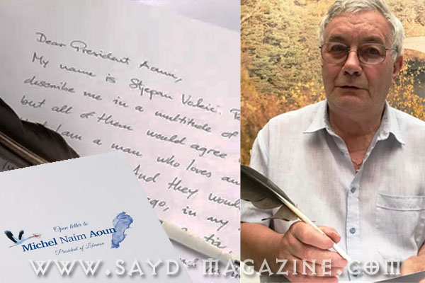

بعد 20 سنة من المنع الجائر.. هذا يومنا وكل صياد حقيقي " خفير"
طويت صفحة المنع الجائر للصيد في لبنان التي دامت 20 سنة، والتي لا نريد العودة الى ذكرها وذكر تداعياتها على حالة الطيور والطبيعة في ظل منع دون هيبة تطبيق.. الان .. نهنئ انفسنا نحن ا…
طويت صفحة المنع الجائر للصيد في لبنان التي دامت 20 سنة، والتي لا نريد العودة الى ذكرها وذكر تداعياتها على حالة الطيور والطبيعة في ظل منع دون هيبة تطبيق.. الان .. نهنئ انفسنا نحن ا…
تأكيدا على احتراف الصياد اللبناني وحبه للطبيعة وفهمه لها.. وبعد انتهاء مهمة منظمة CABS في لبنان الاحد الفائت في 10ايلول 2017 قام مركز الشرق الاوسط للصيد المستدام ومجلة صيد وجمعية…
برعاية وزارة البيئة يتشرف مركز الشرق الأوسط للصيد المستدام MESHC وجمعية حماية الطبيعة في لبنان SPNL و بالتعاون مع شركائهم المحليين والدوليين، مجلة "صيد" وBioland و Birdfair و Bird…
للخيول العربية جمالها، ولمهرجانات الخيول اهلها.. فالساهر على مسؤولية المحافظة على ثقافة وتراث الخيل العربي الاصيل ونشرها في العالم، لا يمكن الا ان يكون راعياً ومحتضناً لأي جهد في…
الصيد في موسم التكاثر ليس من شيم الكبار.. الصياد يلتزم بموسم الصيد ليحافظ على هوايته بطريقة مستدامة
الاسم: الرخمة المصرية أو العقاب المصري. الاسم العلمي (Neophron percnopterus) الوصف: طائر جارح متوسط الحجم ينتمي إلى فصيلة البازية. لون الطير البالغ، ابيض يحد الجناحين ريش طيران اس…
وقع وزير البيئة طارق الخطيب قرار فتح موسم الصيد البري 2018/2017 الذي يبدأ من 15 ايلول 2017 لغاية نهاية شهر كانون الثاني 2018 بدءا من بزوغ الفجر وحتى غروب الشمس، لكل صياد "حائز على…
خلال توجهي مع عائلتي نهار الاحد 14 ايار2017 نحو منطقة ضهور الشوير التي اعشق طبيعتها وناسها الطيبين، لقضاء نهار في البرية مع اصدقاء.. مرّ فوقنا سرب من طيور اللقلق المهاجرة في منطقة…
اقامت جمعية حماية الطبيعة في لبنان SPNL يومي الجمعة والسبت 12 و13 ايار بالتعاون من شركائها الدوليين والمحليين Birdlife International و Birdfair و" مركز الشرق الاوسط للصيد المستدام…
هذه لائحة بالمستندات المطلوبة بحسب ليبان بوست للحصول على رخصة صيد بري في لبنان ؟؟
ليس من السهل ان تحمل رسالة وتجوب بها العالم دون كلل محققا النجاح تلو النجاح..وان تكون مصرا على التقدم مهما بلغت التحديات خصوصا في امور تمس التراث العربي المرتبط بالفروسية والقوة و…
من دولة الى دولة، ومن نجاح الى نجاح، من اثبات هوية تراثية تتعلق بجذور الامارات الى خلق هوية حضارية تتعلق بثقافة المستقبل، هكذا هي سيرة حياة مهرجان سمو الشيخ منصور بن زايد للخيول ا…

بعد اقل من شهر على الحملة التي اطلقها الرئيس اللبناني ميشال عون لحماية الطيور المحلقة المهاجرة التي تعبر سماء لبنان كل عام في موسم الهجرة بين أوروبا وافريقيا. وجه المواطن الكرواتي…
يعلن "مركز الشرق الاوسط للصيد المستدام"MESHC بالتعاون مع شركائه المحليين والدوليين ، جمعية حماية الطبيعة في لبنان SPNL و مجلة "صيد" و Birdlife International و Birdfair عن اطلاق مس…
الصيد في موسم التكاثر ليس من شيم الكبار.. الصياد يلتزم بموسم الصيد ليحافظ على هوايته بطريقة مستدامة
الصيد في موسم التكاثر ليس من شيم الكبار.. الصياد يلتزم بموسم الصيد ليحافظ على هوايته بطريقة مستدامة
الصيد في موسم التكاثر ليس من شيم الكبار.. الصياد يلتزم بموسم الصيد ليحافظ على هوايته بطريقة مستدامة
تهتم الدول ذات التحضر الفكري والانساني بدراسة أوضاع طيورها وحيواناتها لتقييم حالتها والاشراف على عدم تدهور حياتها لانها تعلم اهمية التوازن البيئي في حياة الانسان . وما حصل منذ يوم…
الصيد في موسم التكاثر ليس من شيم الكبار.. الصياد يلتزم بموسم الصيد ليحافظ على هوايته بطريقة مستدامة
شكلت ازالة طائر الترغل عن لائحة الطرائد في لبنان جدلاً كبيراً بين الصيادين، خصوصا بعد الاعلان عن فتح موسم الصيد لعام 2017/2018 من 15 ايلول وحتى آخر تشرين الثاني، فمنهم من استنكر و…
الصيد في موسم التكاثر ليس من شيم الكبار.. الصياد يلتزم بموسم الصيد ليحافظ على هوايته بطريقة مستدامة
يبدو ان الخطوات المتسارعة لوضع حد لتدهور الحياة البرية في لبنان - التي كانت بدايتها حملة فخامة رئيس الجمهورية العماد ميشال عون لحماية الطيور المهاجرة وتنظيم الصيد، وبعدها مؤتمر مع…
بتنظيم من منظمة mercy corps وبالتعاون مع مركز وزارة الشؤون الاجتماعية في منطقة صليما. قدمت "جمعية حماية الطبيعة في لبنان SPNL "و"مركز الشرق الاوسط للصيد المستدام MESHC" ندوة عن سل…
الصيد في موسم التكاثر ليس من شيم الكبار.. الصياد يلتزم بموسم الصيد ليحافظ على هوايته بطريقة مستدامة